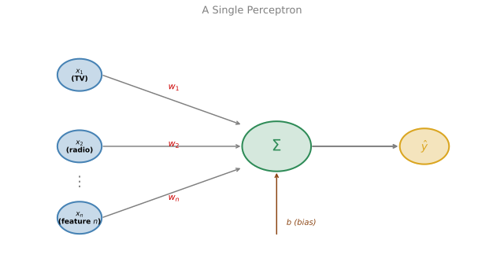
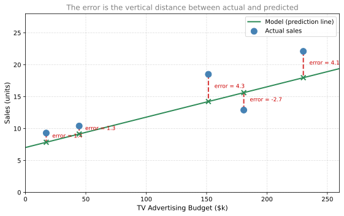

Optimization in Neural Networks
calculus
In this section we will see how the optimization ideas from calculus (derivatives, gradient descent, loss functions) come together in the building block of neural networks, which is the perceptron. We will also introduce Newton’s method as an alternative to gradient descent.
Perceptron, Building Block of Neural Networks
You have already seen linear regression. It turns out that linear regression can be expressed as a single perceptron, the fundamental unit of neural networks.
From Regression to Perceptrons
Consider the problem of predicting sales from advertising budget. You have data on how much a company spent on TV ads and how many units it sold:
| TV Advertising Budget ($k) | Sales (units) |
|---|---|
| 230.1 | 22.1 |
| 44.5 | 10.4 |
| 17.2 | 9.3 |
| 151.5 | 18.5 |
| 180.8 | 12.9 |
With one feature (TV advertising budget), you fit a line through the data. But what happens when you have two features, like TV advertising budget and radio advertising budget? Or 10 features? Or 100?
This is where the perceptron comes in. It takes multiple inputs and produces a single output prediction.
Perceptron Diagram
Here is what a perceptron looks like. On the left side you have the inputs (the features of your data, such as TV advertising budget and radio advertising budget). Each input travels along a connection that has a weight attached to it. The weights control how much influence each input has on the final answer. All the weighted inputs flow into a summation node in the middle, where they get added up along with a bias term. The result that comes out on the right is the prediction \(\hat{y}\).
Think of it like a voting system. Each feature gets a vote, but some votes count more than others (the weights). The bias is like a baseline opinion that exists even before any votes come in. The final tally is your prediction.
In the next section we discuss what happens inside that summation function (the \(\Sigma\) sign in the middle).
Math Inside
Each input \(x_i\) is multiplied by a corresponding weight \(w_i\) that determines how important that feature is. The weighted inputs are summed together with a bias term \(b\).
\[\hat{y} = w_1 x_1 + w_2 x_2 + \cdots + w_n x_n + b\]
Or in compact notation
\[\hat{y} = \mathbf{w} \cdot \mathbf{x} + b\]
The weights encode importance. If the TV advertising budget matters more than the radio advertising budget for predicting sales, then \(w_1\) will be larger than \(w_2\).
The goal is to find the best \(w_1, w_2, \ldots, w_n\) and \(b\) so that when we plug in \(x_1\) and \(x_2\) for every data point in our dataset, the predicted sales \(\hat{y}\) comes as close as possible to the actual sales.
Note
No activation function here. In this simple perceptron (linear regression), the output is just the weighted sum. Later, when we build neural networks for classification, we will add an activation function after the summation.
Review Questions
1. For our optimization purpose, the predicted value defined as \(\hat{y} = w_1 x_1 + w_2 x_2 + b\) will be treated as a function of (select all that apply): \(x_2\), \(w_1\), \(w_2\), \(x_1\), \(b\)
TipAnswer
\(w_1\), \(w_2\), and \(b\). Given that the goal is to find optimal values for \(w_1\), \(w_2\) and \(b\) such that we minimize the error, the predicted value \(\hat{y}\) will be treated as a function of \(w_1\), \(w_2\) and \(b\). The inputs \(x_1\) and \(x_2\) are fixed data points from your dataset, not variables you optimize.
What Makes a Good Model?
The goal is to find the best values of \(w_1, w_2, \ldots, w_n\) and \(b\) such that for every data point in our dataset, the predicted sales \(\hat{y}\) is as close as possible to the actual sales \(y\).
But “as close as possible” needs to be made precise. That is where the loss function comes in.
Loss Function
Recall from the previous section that we have data on TV advertising budgets and sales, and we fit a line through those points. That line is our model. Now we need a way to evaluate how well the model is doing, and based on that, figure out how to improve it.
What Does the Model Predict?
The model gives us a prediction \(\hat{y}\) for each data point. For some points the prediction will be close to the actual sales, for others it will be off. The question is, how do we measure “how off” the model is?

The dashed red lines are the errors. Each error is the difference between the actual value and the prediction.
\[\text{error} = y - \hat{y}\]
Clearly, the shorter these lines are, the better the model, because that means the predictions are close to the actual values.
Note
Why are the error lines vertical and not perpendicular to the line? You might think the shortest distance from a point to a line is the perpendicular one, and you would be right geometrically. But here we are not asking “how far is this point from the line in general?” We are asking “how wrong is my prediction of \(y\)?” The input \(x\) (TV advertising budget) is a known, exact number. It is not wrong. The only thing that can be wrong is the output prediction. So we measure the error purely in the \(y\) direction, which is vertical. If both \(x\) and \(y\) had errors (for example, if you were unsure about the TV advertising budget too), then you would use perpendicular distance instead. That is a different technique called orthogonal regression.
Why Square the Error?
There is a problem with using \(y - \hat{y}\) directly. If the actual point is above the line, the error is positive. If it is below the line, the error is negative. A negative error is just as bad as a positive one, but if we add them up, they can cancel out and give us a misleadingly small number.
To fix this, we square the error. Squaring always gives a positive number, so errors cannot cancel each other out.
\[\text{squared error} = (y - \hat{y})^2\]
1/2 Factor
In machine learning, we typically multiply by \(\frac{1}{2}\) as well.
\[L(y, \hat{y}) = \frac{1}{2}(y - \hat{y})^2\]
The reason is cosmetic. When you take the derivative of \((y - \hat{y})^2\), you get a factor of 2 out front. The \(\frac{1}{2}\) cancels that 2, giving cleaner formulas. It does not change where the minimum is, because multiplying a function by any positive constant does not move its minimum.
Goal
We now have a prediction function that outputs \(\hat{y} = w_1 x_1 + w_2 x_2 + b\), and a loss function \(L(y, \hat{y}) = \frac{1}{2}(y - \hat{y})^2\) that tells us how wrong each prediction is.
Our goal is to minimize this loss. That means finding the values of \(w_1\), \(w_2\), and \(b\) that produce predictions with the least error. In the previous pages you learned methods for minimizing functions, including gradient descent. As you can imagine, that is exactly what we will use here. We will use gradient descent to minimize \(L\), and thus find the best \(w_1\), \(w_2\), and \(b\). That implies we have found the best model for the dataset.
Training with Gradient Descent
We now know the problem. We want to find the prediction function with the best weights and bias that minimizes the loss function \(L(y, \hat{y})\). In other words, we want the model that makes the smallest mistakes.
How do we find these optimal values? We use gradient descent. Recall the gradient descent update formulas.
\[w_1 \leftarrow w_1 - \alpha \frac{\partial L}{\partial w_1}\]
\[w_2 \leftarrow w_2 - \alpha \frac{\partial L}{\partial w_2}\]
\[b \leftarrow b - \alpha \frac{\partial L}{\partial b}\]
where \(\alpha\) is the learning rate.
You start with some initial values for \(w_1\), \(w_2\), and \(b\). Then all you need to do is calculate those three partial derivatives, update the parameters, and you get a new set of weights that produce a smaller loss. If you repeat this many times, you end up with weights that have a very low loss, which means a good model.
Computing the Derivatives (Chain Rule)
Now we need to calculate \(\frac{\partial L}{\partial w_1}\), \(\frac{\partial L}{\partial w_2}\), and \(\frac{\partial L}{\partial b}\). There is going to be a lot of chain rule here.
For reference, our two functions are
\[\hat{y} = w_1 x_1 + w_2 x_2 + b\]
\[L = \frac{1}{2}(y - \hat{y})^2\]
Notice that \(L\) depends on \(\hat{y}\), and \(\hat{y}\) depends on \(w_1\), \(w_2\), and \(b\). So by the chain rule:
\[\frac{\partial L}{\partial b} = \frac{\partial L}{\partial \hat{y}} \cdot \frac{\partial \hat{y}}{\partial b}\]
\[\frac{\partial L}{\partial w_1} = \frac{\partial L}{\partial \hat{y}} \cdot \frac{\partial \hat{y}}{\partial w_1}\]
\[\frac{\partial L}{\partial w_2} = \frac{\partial L}{\partial \hat{y}} \cdot \frac{\partial \hat{y}}{\partial w_2}\]
Notice that \(\frac{\partial L}{\partial \hat{y}}\) appears in all three. So we really only need to compute four derivatives: that common one, plus the three partial derivatives of \(\hat{y}\) with respect to \(w_1\), \(w_2\), and \(b\). Breaking the problem into smaller pieces makes it much easier.
Computing Each Piece
Piece 1: \(\frac{\partial L}{\partial \hat{y}}\)
\[L = \frac{1}{2}(y - \hat{y})^2\]
Using the chain rule, the derivative of \(\frac{1}{2}(\text{something})^2\) is \((\text{something})\) times the derivative of the inside with respect to \(\hat{y}\). The derivative of \((y - \hat{y})\) with respect to \(\hat{y}\) is \(-1\). So
\[\frac{\partial L}{\partial \hat{y}} = (y - \hat{y}) \cdot (-1) = -(y - \hat{y})\]
Piece 2: \(\frac{\partial \hat{y}}{\partial b}\)
In \(\hat{y} = w_1 x_1 + w_2 x_2 + b\), the term \(w_1 x_1 + w_2 x_2\) is a constant with respect to \(b\). The derivative of the remaining part \(b\) with respect to \(b\) is simply \(1\).
\[\frac{\partial \hat{y}}{\partial b} = 1\]
Piece 3: \(\frac{\partial \hat{y}}{\partial w_1}\)
The terms \(w_2 x_2 + b\) are constants with respect to \(w_1\). What remains is \(w_1 x_1\), and its derivative with respect to \(w_1\) is \(x_1\).
\[\frac{\partial \hat{y}}{\partial w_1} = x_1\]
Piece 4: \(\frac{\partial \hat{y}}{\partial w_2}\)
Similarly, everything except \(w_2 x_2\) is constant, so
\[\frac{\partial \hat{y}}{\partial w_2} = x_2\]
Putting It All Together
Now we plug the pieces back into the chain rule expressions.
\[\frac{\partial L}{\partial b} = -(y - \hat{y}) \cdot 1 = -(y - \hat{y})\]
\[\frac{\partial L}{\partial w_1} = -(y - \hat{y}) \cdot x_1\]
\[\frac{\partial L}{\partial w_2} = -(y - \hat{y}) \cdot x_2\]
Gradient Descent Update Rules
Plugging these into the gradient descent formulas, we get the final update rules.
\[w_1 \leftarrow w_1 - \alpha \cdot [-(y - \hat{y}) \cdot x_1] = w_1 + \alpha (y - \hat{y}) x_1\]
\[w_2 \leftarrow w_2 - \alpha \cdot [-(y - \hat{y}) \cdot x_2] = w_2 + \alpha (y - \hat{y}) x_2\]
\[b \leftarrow b - \alpha \cdot [-(y - \hat{y})] = b + \alpha (y - \hat{y})\]
If we repeat these updates many times over the dataset, we will get weights \(w_1\), \(w_2\), and \(b\) that produce a very small error, and therefore a good model.
Tip
Summary. The entire training process boils down to: compute \(\hat{y}\), compute the error \((y - \hat{y})\), then nudge each weight in the direction that reduces that error. The amount of nudging is controlled by the learning rate \(\alpha\).
Up Next
In the next section, we will see Newton’s method as an alternative optimization technique.